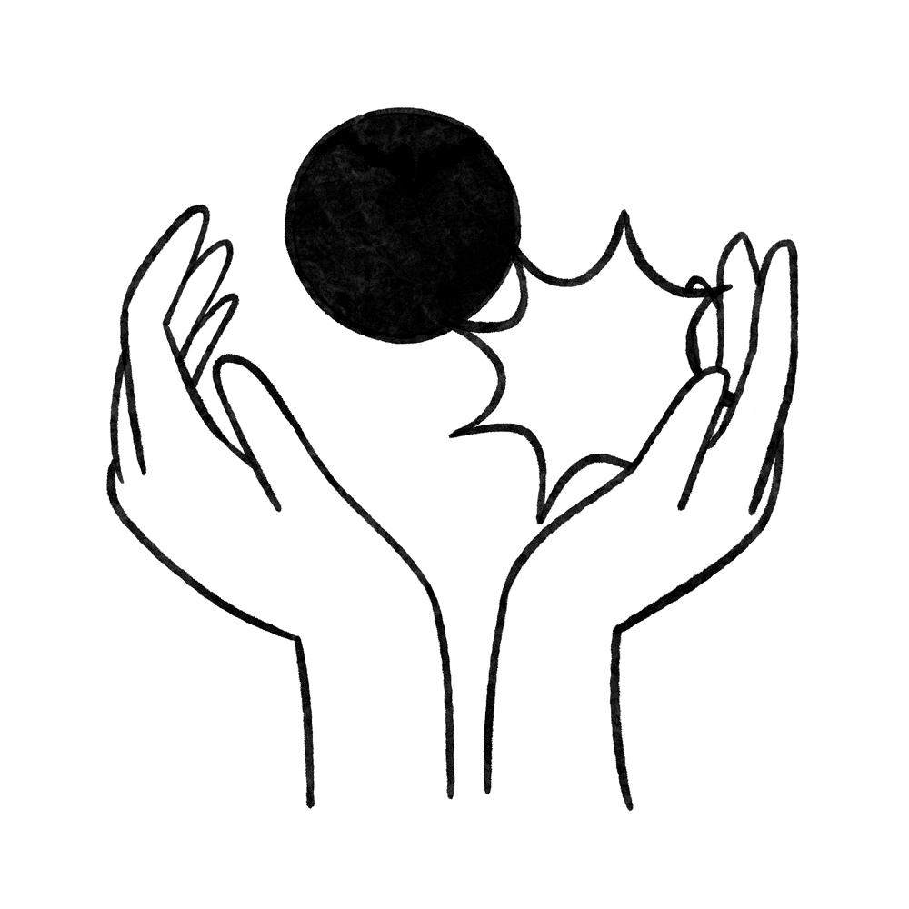

FEMINIST
ORGANIZING
TOOLKIT
↓
ORGANIZING
TOOLKIT
FEMINIST ORGANIZING TOOLKIT
FEMINIST ORGANIZING TOOLKIT

FEMINIST ORGANIZING TOOLKIT

FEMINIST ORGANIZING TOOLKIT

FEMINIST ORGANIZING TOOLKIT
A PLACE TO
START
Feminist Organizing Toolkit contains information and interviews around creating networks for safety, accessing and supporting resources, expanding knowledge around our current political context, and tactics for organizing with others to keep each other safe.
Created by Saachi Mehta and Avrie Allen